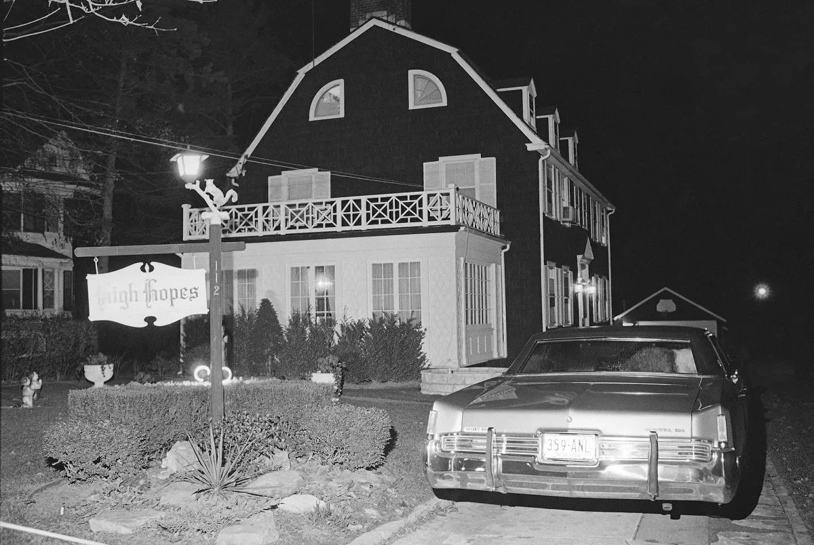

112 Ocean Avenue
112 Ocean Avenue, famously known as the Amityville Horror House, is a large Dutch Colonial house situated in the suburban neighborhood of Amityville, on the south shore of Long Island, New York. The house became the site of one of the most notorious hauntings in American history.
The DeFeo Family Slaughter
The tragic story of the DeFeo family serves as a chilling prologue to this story, their fate would cast a dark shadow over the house for decades to come. DeFeo family consisted of Ronald Sr. and Louise DeFeo, along with their four children: Ronald Jr. (known as Butch), Dawn, Allison, and Marc. In the early 1960s, the DeFeo family moved into 112 Ocean Avenue due to the financial stability provided by Ronald Senior's successful car dealership business. The house, a stately Dutch Colonial-style home, seemed like a dream come true for the DeFeos—A place where they could build a life and raise their family
Tragedy Strikes
Initially, life at 112 Ocean Avenue appeared idyllic. The DeFeo family enjoyed their new home, with its spacious rooms and quaint charm. However, as time passed, neighbors began to notice tensions within the family, particularly between Ronald Sr. and his eldest son, Butch. On the night of November 13, 1974, the tranquility of Amityville shattered when Ronald Jr., known as Butch, entered a local bar in distress, claiming that his parents had been shot. Police were summoned to the DeFeo residence at 112 Ocean Avenue, where they discovered a horrific scene. Ronald Sr., Louise, and their four children were found murdered in their beds, all shot with a .35 caliber rifle. Initially, Ronald DeFeo Jr. maintained that he found his family murdered and was innocent of any wrongdoing. However, inconsistencies in his story and evidence uncovered during the investigation led to his arrest. Ultimately, Ronnie confessed to the murders, claiming that he had been compelled by voices in the house to commit the heinous acts. In subsequent interviews and statements, Ronnie DeFeo described the house at 112 Ocean Avenue was plagued by malevolent forces. He spoke of hearing voices and experiencing intense feelings of anger and darkness that he believed drove him to commit the murders. This depiction of supernatural influence added a chilling layer to the already tragic narrative surrounding the DeFeo family and their home.
The Lutz Family’s Experience
Within days of moving in, the Lutz family began experiencing inexplicable occurrences. Cold spots materialized out of nowhere, unsettling odors permeated the air, and unsettling sounds echoed through the halls. George, in particular, allegedly woke every night at 3:15 AM—the same time the tragic DeFeo murders occurred years earlier. As the days passed at 112 Ocean Avenue, the tension escalated dramatically. George Lutz began experiencing increasingly unsettling phenomena. He claimed to see shadowy figures and suffered from vivid nightmares that blurred the line between dreams and reality. The atmosphere in the house grew heavy with a sense of dread, with strange noises and inexplicable movements becoming a daily occurrence. Kathy Lutz described a terrifying incident where she felt herself levitating off her bed—an experience that defied any rational explanation. These events took a toll on the entire family, plunging them into a state of fear and confusion. After enduring just 28 days the Lutz family made a frantic decision to leave, abandoning most of their belongings in their rush to escape the oppressive atmosphere of 112 Ocean Avenue. Years later, Kathy Lutz’s children made a startling revelation. They suggested that George might have engaged in occult rituals within the house, shedding new light on the eerie events that had plagued their family. This revelation added a disturbing layer to the ongoing mystery surrounding the house and its dark history. George Lutz, grappling with the traumatic events at 112 Ocean Avenue, sought guidance from paranormal investigators Ed and Lorraine Warren. In the winter of 1976, George met with Ed Warren at a diner near the house to discuss their ordeal. Despite the meeting being close to the location, George was apprehensive about returning to the house itself. He handed over the keys to Ed, who reportedly approached the house briefly but declined to enter, citing a sudden feeling of overwhelming anxiety and dread Following their departure from Amityville, the Lutz family struggled to escape the shadow of their haunting experience. They moved frequently in an attempt to leave behind the memories and trauma associated with their brief time at 112 Ocean Avenue. However, the paranormal phenomena reportedly followed them wherever they went. George continued to grapple with nightmares and intrusive thoughts related to the events at the house. He described feeling a persistent presence and the sensation of being watched, even when far from Amityville. Kathy Lutz, too, reported ongoing disturbances, including unexplained noises and feelings of dread. George Lutz, an ordinary man with an interest in the occult and spiritualism, reportedly delved into the house's past. Some speculate that his curiosity about the occult may have inadvertently stirred dormant forces within 112 Ocean Avenue. This interest, coupled with the house’s eerie history, set the stage for a series of disturbing events. After the Lutz family fled the house, citing terrifying paranormal experiences, their story attracted widespread media attention and public interest. Ed and Lorraine Warren, known for their investigations into supernatural phenomena, were contacted to assess the situation at 112 Ocean Avenue.
Warren Investigation
Ed and Lorraine Warren visited the house to conduct a series of paranormal investigations. They employed various techniques typical of their investigations, including using audio and video recording devices to capture potential paranormal activity, conducting interviews with witnesses (including the Lutz family), and employing their psychic and mediumistic abilities to sense any spiritual presence. Warrens asserted that they encountered strong evidence of demonic presence within the house. They reported experiencing intense cold spots, unexplained odors, and disturbances in electromagnetic fields—commonly associated with paranormal activity. Lorraine Warren, a psychic medium, claimed to have made contact with malevolent entities during her time in the house. Investigations at 112 Ocean Avenue were documented in their books and lectures, notably contributing to the house's enduring reputation as one of the most haunted places in America.
Criticism
Despite their assertions, the Warrens' investigations have faced criticism from skeptics who question the validity of their findings and methods. Some skeptics suggest that the events at 112 Ocean Avenue were exaggerated or fabricated for publicity or financial gain.